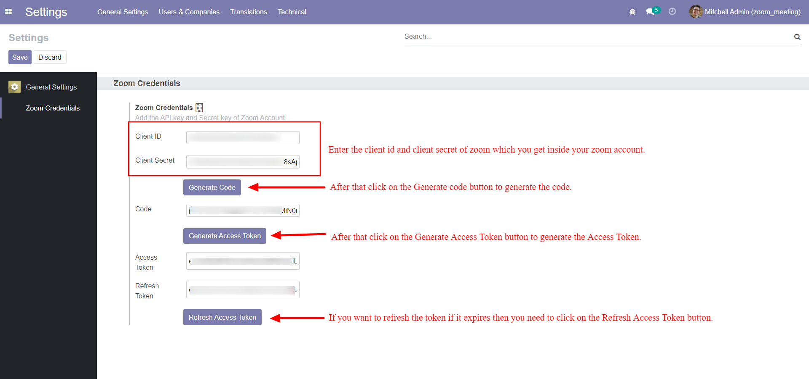
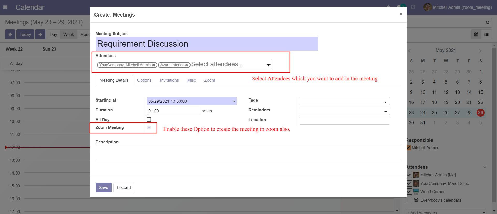
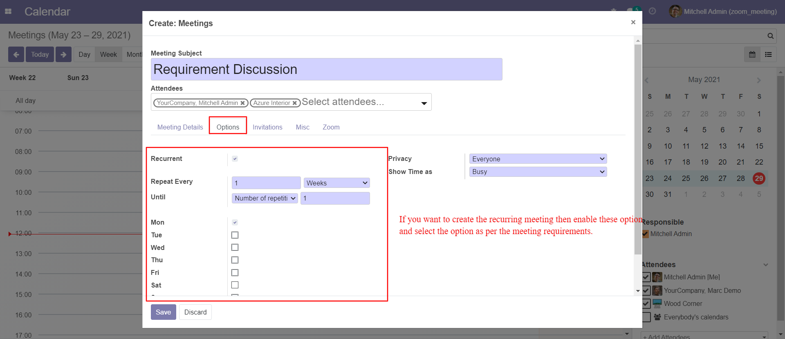
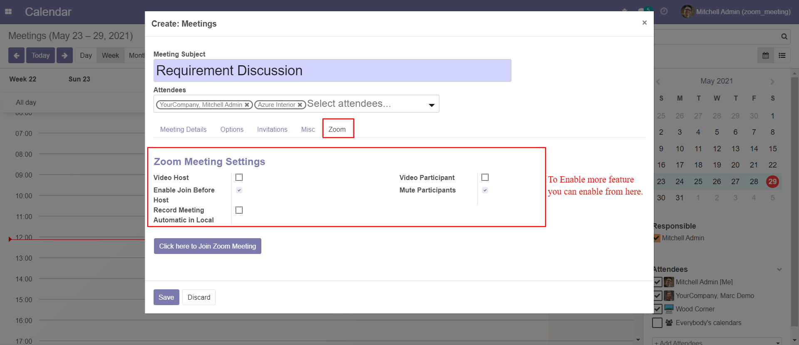
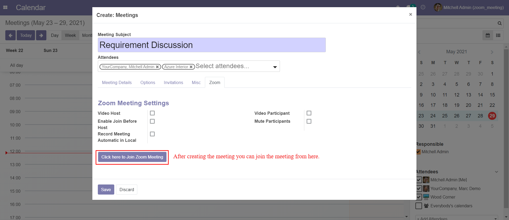
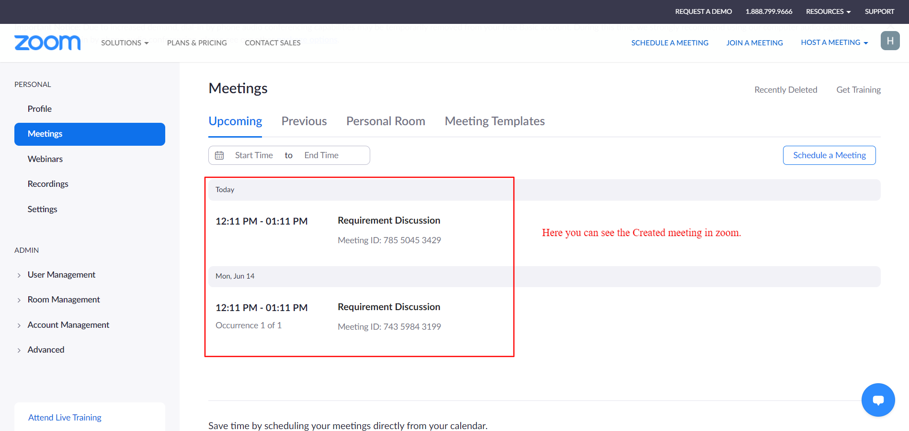

Odoo 14 Zoom Integration
Features
- This modules allows you to create the meeting in zoom.
- Also you can create the recurring meeting in zoom.
- Also you can delete the created meeting in zoom.
- Settings -> General Setting -> Zoom Credentials you need to configure the Zoom Client Id and Client Secret and based on that click on Generate Code button to generate the code and then you need to click on the Generate Access token button to generate the Access Token and Refresh Access Token button for Refreshing the Access Token.

- Inside Calendar -> Meeting View Enable the option Zoom Meeting to create the meeting in zoom.

- If you want to create the recurrent meeting in zoom then enable that recurrent meeting option so that will also create the recurrent meeting in zoom.

- Inside the Zoom Tab you can also configure the more setting which you wants to enable in zoom.

- After creating the meeting Inside Calendar -> Zoom tab, you can able to join the zoom meeting by clicking on the button.

- After creating the meeting you can see the meetings inside the zoom.

- Also when you delete the meeting in odoo it will delete the meeting in zoom.
Help and Support

Allene Software